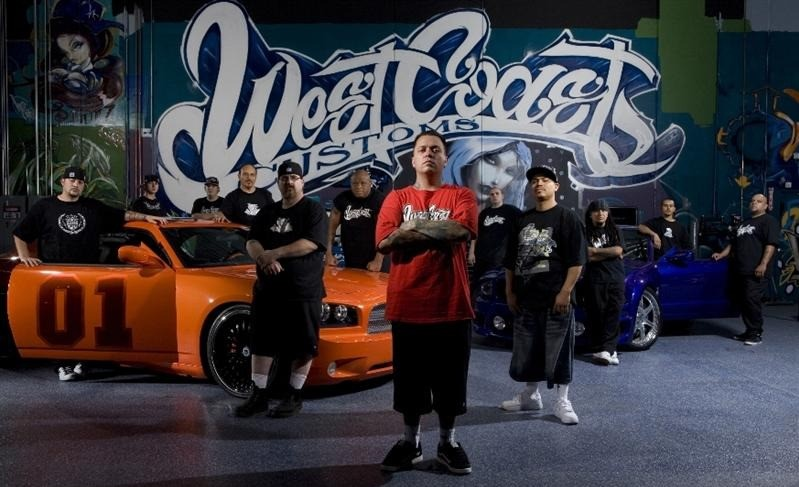

КТО МЫ?
West Coast Customs - это ваш универсальный магазин для всех ваших потребностей в настройке автомобиля.
В этом магазине, расположенном в Южной Калифорнии, работает опытная команда техников, производителей, дизайнеров, электриков, художников и многих других.
Каждый день команда работает над созданием нестандартных произведений искусства для наших клиентов.
ЧТО МЫ ДЕЛАЕМ?
Возможно, вы видели некоторые из наших уникальных автомобилей на несколько миллионов долларов в нашем телешоу или в новостях, но мы также специализируемся на небольших модификациях.
От оберток до колес и всего, что между ними, свяжитесь с нами сегодня, чтобы узнать о наших услугах.